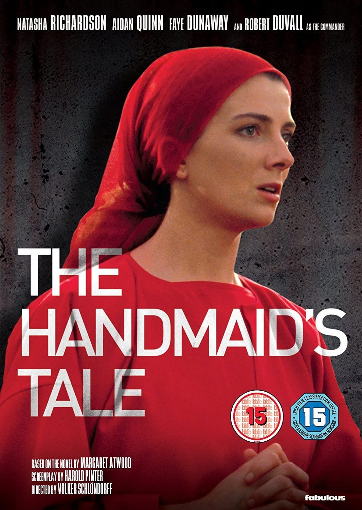

Filmes Populares
France - Sob os holofotes(2021)
 9.2
9.2
 Favoritar
Favoritar
Jornalista que precisa lidar diariamente com as disputas profissionais e a conturbada vida familiar, France de Meurs tem seu mundo virado do avesso depois de ferir acidentalmente um pedestre durante um acidente de trânsito.
A casa dos espíritos (1994)
9.2
Favoritar
A história do Chile da década de 20 aos anos 70 é contada através da saga da família Trueba, que começa com a união de um homem simples (Jeremy Irons), que fica rico, com uma jovem (Meryl Streep) de poderes paranormais. A saga se desenvolve até esta família ser atingida pela revolução, que no início da década de 70 derrubou o presidente Salvador Allende.

The handmaid's tale - A Decadência de uma espécie (1990)
9.2
Favoritar